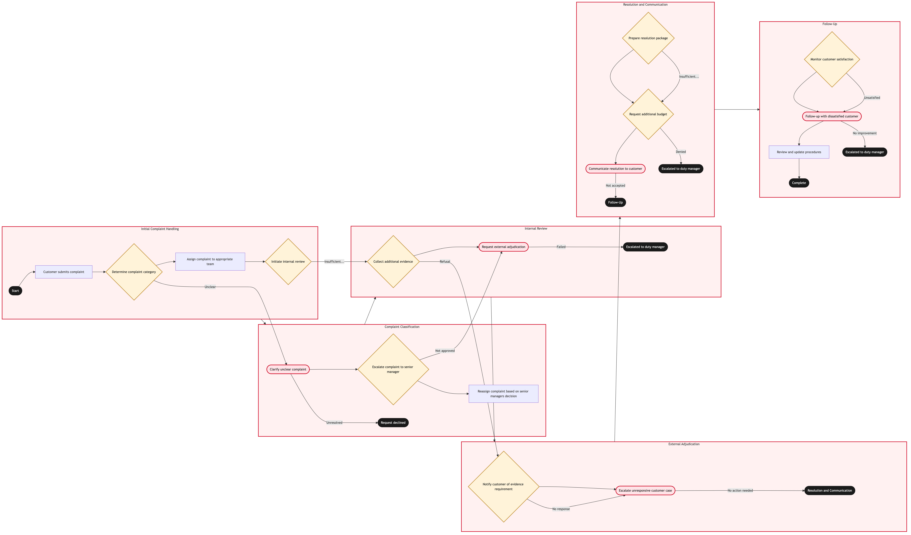

Updated 2026-08-20
Goodwill Gesture and Customer Recovery
Process flow
Click to zoom

Process steps
▼
Phase 1 — Initial Complaint Handling
4 steps
| Step | Activity | Role | System | Input | Output | KPI | Dec | Exc | Pain point |
|---|---|---|---|---|---|---|---|---|---|
| 1.1 | Customer submits complaint | Aeroplan Member Services Agent | aircanada.comA | Customer's complaint details | Complaint logged in Salesforce Service Cloud | Response time within 24 hours | N | N | High volume of complaints can lead to delayed response times. |
| 1.2 | Determine complaint category | APPR Adjudicator | Salesforce Service CloudA | Logged complaint details | Complaint categorized (e.g., flight delay, baggage claim) | 100% accurate categorization rate | Y | N | Complex complaints may require additional clarification from the customer. |
| 1.3 | Assign complaint to appropriate team | YYZ Operations Control Duty Manager | Salesforce Service CloudA | Categorized complaint | Complaint assigned to relevant team (e.g., Flight Operations, Baggage) | 95% successful assignment rate | N | N | Inaccurate assignments can lead to delayed resolutions. |
| 1.4 | Initiate internal review | APPR Adjudicator | Salesforce Service CloudA | Assigned complaint | Internal review report | Average review time of 2 hours | Y | N | Insufficient evidence can delay the internal review process. |
▼
Phase 2 — Complaint Classification
3 steps
| Step | Activity | Role | System | Input | Output | KPI | Dec | Exc | Pain point |
|---|---|---|---|---|---|---|---|---|---|
| 2.1 | Clarify unclear complaint | Aeroplan Member Services Agent | Amazon ConnectA | Unclear complaint details | Clarified complaint details | 90% successful clarification rate | N | Y | Customer may become frustrated by multiple contacts. |
| 2.2 | Escalate complaint to senior manager | YYZ Operations Control Duty Manager | Salesforce Service CloudA | Clarity request result | Senior manager's review and decision | Average escalation time of 1 hour | Y | N | Escalation can delay the resolution process. |
| 2.3 | Reassign complaint based on senior manager's decision | YYZ Operations Control Duty Manager | Salesforce Service CloudA | Senior manager's review and decision | Reassigned complaint to relevant team | 98% successful reassignment rate | N | N | Incorrect reassignments can lead to further delays. |
▼
Phase 3 — Internal Review
2 steps
| Step | Activity | Role | System | Input | Output | KPI | Dec | Exc | Pain point |
|---|---|---|---|---|---|---|---|---|---|
| 3.1 | Collect additional evidence | Cargo Compliance Agent | Air Canada Mobile AppA | Insufficient evidence details | Collected evidence | 85% successful evidence collection rate | Y | N | Customers may be reluctant to provide additional information. |
| 3.2 | Request external adjudication | APPR Adjudicator | CTA Complaint InterfaceA | Senior manager's decision and complaint details | Adjudication request sent to CTA | 90% successful submission rate | N | Y | High backlog at the CTA can delay external adjudication. |
▼
Phase 4 — External Adjudication
2 steps
| Step | Activity | Role | System | Input | Output | KPI | Dec | Exc | Pain point |
|---|---|---|---|---|---|---|---|---|---|
| 4.1 | Notify customer of evidence requirement | Aeroplan Member Services Agent | Amazon ConnectA | Evidence collection request | Customer notified and provided instructions | 95% successful notification rate | Y | N | Customers may not respond to the notification. |
| 4.2 | Escalate unresponsive customer case | YYZ Operations Control Duty Manager | Salesforce Service CloudA | Customer response status | Case escalated to senior management for follow-up | Average escalation time of 2 hours | N | Y | Escalation can delay the resolution process. |
▼
Phase 5 — Resolution and Communication
3 steps
| Step | Activity | Role | System | Input | Output | KPI | Dec | Exc | Pain point |
|---|---|---|---|---|---|---|---|---|---|
| 5.1 | Prepare resolution package | APPR Adjudicator | Salesforce Service CloudA | Review report and evidence | Resolution package (e.g., apology, compensation) | Average preparation time of 1 hour | Y | N | Compensation calculations can be complex. |
| 5.2 | Request additional budget | YYZ Operations Control Duty Manager | Salesforce Service CloudA | Resolution package details | Budget approval from finance department | Average approval time of 2 hours | Y | N | Delays in budget approval can prolong the resolution process. |
| 5.3 | Communicate resolution to customer | Aeroplan Member Services Agent | Air Canada Mobile App and aircanada.comU | Resolution package | Customer notified of resolution | 90% successful communication rate | N | Y | Customers may not accept the offered resolution. |
▼
Phase 6 — Follow-Up
3 steps
| Step | Activity | Role | System | Input | Output | KPI | Dec | Exc | Pain point |
|---|---|---|---|---|---|---|---|---|---|
| 6.1 | Monitor customer satisfaction | APPR Adjudicator | Salesforce Service CloudA | Customer feedback | Satisfaction score | 95% satisfied customers | Y | N | Low satisfaction scores can indicate unresolved issues. |
| 6.2 | Follow-up with dissatisfied customer | Aeroplan Member Services Agent | Amazon ConnectA | Satisfaction score and feedback | Follow-up resolution or clarification | 80% successful follow-up rate | N | Y | Customers may become frustrated by multiple follow-ups. |
| 6.3 | Review and update procedures | YYZ Operations Control Duty Manager | Salesforce Service CloudA | Complaint details and follow-up results | Updated internal procedures | 100% documented procedure updates | N | N | Inadequate procedure updates can lead to recurring issues. |
Swim lanes
Aeroplan Member Services Agent1.1 2.1 4.1 5.3 6.2
APPR Adjudicator1.2 1.4 3.2 5.1 6.1
YYZ Operations Control Duty Manager1.3 2.2 2.3 4.2 5.2 6.3
Cargo Compliance Agent3.1
Systems touched
aircanada.comASalesforce Service CloudAAmazon ConnectAAir Canada Mobile AppACTA Complaint InterfaceAAir Canada Mobile App and aircanada.comU
Key performance indicators
- Response time within 24 hours
- 100% accurate categorization rate
- 95% successful assignment rate
- Average review time of 2 hours
- 90% successful clarification rate
Risks and control points
- High volume of complaints leading to delayed response times.
- Complex complaints requiring additional clarification from customers.
- Insufficient evidence delaying the internal review process.
- Customers' reluctance to provide additional information.
- Delays in budget approval prolonging the resolution process.
Air Canada Process Wiki — process and systems reference compiled from public sources
for IT Application Management and User Support pre-sales discovery.
Built 2026-08-21. Every system carries an evidence tier: tier C is an industry pattern and tier U is an open
question, and neither should be asserted as fact about Air Canada without confirmation in discovery.
Not affiliated with or endorsed by Air Canada. Air Canada, Aeroplan and Altitude are trademarks of Air Canada.